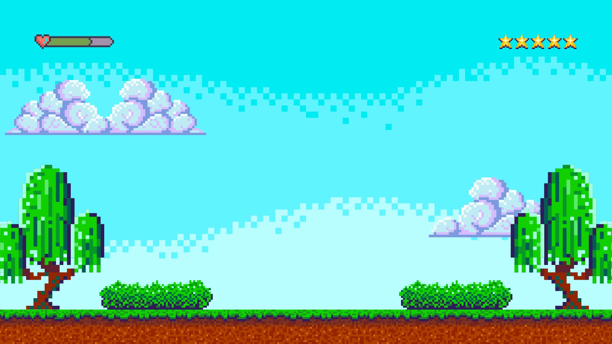

PORTADA

UNIVERSIDAD NACIONAL DE LOJA
FACULTAD DE LA EDUCACIÓN, EL ARTE Y LA COMUNICACIÓN
PEDAGOGÍA DE LAS CIENCIAS EXPERIMENTALES INFORMÁTICA
Asignatura:
Análisis y Diseño de Recursos Educativos.
Estudiante
Erika Alejandra Salinas Albito
UNIVERSIDAD NACIONAL DE LOJA
FACULTAD DE LA EDUCACIÓN, EL ARTE Y LA COMUNICACIÓN
PEDAGOGÍA DE LAS CIENCIAS EXPERIMENTALES INFORMÁTICA
Asignatura:
Análisis y Diseño de Recursos Educativos.
Estudiante
Erika Alejandra Salinas Albito
| UNIVERSIDAD NACIONAL DE LOJA |

Objetivo General:
O.M.3.1. Utilizar el sistema de coordenadas cartesianas y la generación de sucesiones con sumas, restas, multiplicaciones y divisiones, como estrategias para solucionar problemas del entorno, justificar resultados, comprender modelos matemáticos y desarrollar el pensamiento lógico-matemático.
Destreza con criterio de desempeño:
M.3.1.9. Reconocer términos y realizar multiplicaciones entre números naturales, aplicando el algoritmo de la multiplicación y con el uso de la tecnología.
Indicador de Evaluación:
I.M.3.11. Aplica estrategias de cálculo, los algoritmos de adiciones, sustracciones, multiplicaciones y divisiones con números naturales, en la construcción y solución de situaciones
cotidianas sencillas.
Objetivo:
O.M.5.6. Desarrollar la curiosidad y la creatividad a través del uso de herramientas matemáticas al momento de enfrentar y solucionar problemas de la realidad nacional, demostrando actitudes de orden, perseverancia y capacidades de investigación.
Criterios de evaluación:
CE.LL.5.8. Recrea los textos literarios leídos desde la experiencia personal, adaptando diversos recursos literarios, y experimenta la escritura creativa con diferentes estructuras literarias.
Nivel al que va dirigido:
Primero de Bachillerato General
Edad:
15 a 16 años
Área de conocientos:
Matematica
Idioma:
Español
Ambiente de estudio:
Aula Presencial
uy
df
dwq
Obra publicada con Licencia Creative Commons Reconocimiento Compartir igual 4.0